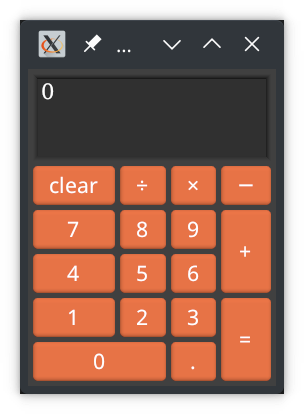

Calculator: make_widget and grid layout
Topics: grid layout, accelerator bindings

The full code for this example can be found here.
Back-end API
First things first, we should design an API for our implementation (back-end).
Our Calculator is simply a machine with some internal state, a method to
handle input keys and another method to generate a display string.
We define an enum, Key, to map each of our buttons to. Since in our example
numeric input (including the decimal point, .) will simply get pushed to a
string buffer, we represent these with Key::Char('0') etc.
#![allow(unused)] fn main() { #[derive(Clone, Debug)] enum Key { Clear, DelBack, Divide, Multiply, Subtract, Add, Equals, Char(char), } #[derive(Clone, Debug)] struct Calculator { // ... } impl Calculator { fn new() -> Calculator { Calculator { /* .. */ } } fn display(&self) -> String { todo!() } // return true if display changes fn handle(&mut self, key: Key) -> bool { todo!() } } }
Implementing Calculator is left as an exercise to the reader (or use the code
linked above).
Buttons and key bindings
The string type used for TextButton labels is AccelString, which
supports simple mark-up: &clear adds a binding to key c and is
displayed as "clear" (underline only visible when Alt is held).
We may use this to associate physical keys with our buttons. We may associate
additional keys using TextButton::with_keys. For example:
TextButton::new_msg("&1", Key::Char('1'))TextButton::new_msg("&clear", Key::Clear).with_keys(&[VK::Delete])TextButton::new_msg("&=", Key::Equals).with_keys(&[VK::Return, VK::NumpadEnter])
Note: VK is an alias to
kas::event::VirtualKeyCode,
which is itself a re-export of
winit::event::VirtualKeyCode.
This type will likely be revised by Winit in the future.
Button grid
We use layout = grid: { ... } to define our buttons. We do so within a
dedicated Buttons widget (this is a matter of style; we could directly embed
the grid in CalcUI).
#![allow(unused)] fn main() { use kas::event::VirtualKeyCode as VK; use kas::prelude::*; use kas::widgets::TextButton; #[derive(Clone, Debug)] enum Key { Clear, DelBack, Divide, Multiply, Subtract, Add, Equals, Char(char) } impl_scope! { #[widget{ layout = grid: { 0, 0: TextButton::new_msg("&clear", Key::Clear).with_keys(&[VK::Delete]); 1, 0: TextButton::new_msg("&÷", Key::Divide).with_keys(&[VK::Slash]); 2, 0: TextButton::new_msg("&×", Key::Multiply).with_keys(&[VK::Asterisk]); 3, 0: TextButton::new_msg("&−", Key::Subtract); 0, 1: TextButton::new_msg("&7", Key::Char('7')); 1, 1: TextButton::new_msg("&8", Key::Char('8')); 2, 1: TextButton::new_msg("&9", Key::Char('9')); 3, 1..3: TextButton::new_msg("&+", Key::Add); 0, 2: TextButton::new_msg("&4", Key::Char('4')); 1, 2: TextButton::new_msg("&5", Key::Char('5')); 2, 2: TextButton::new_msg("&6", Key::Char('6')); 0, 3: TextButton::new_msg("&1", Key::Char('1')); 1, 3: TextButton::new_msg("&2", Key::Char('2')); 2, 3: TextButton::new_msg("&3", Key::Char('3')); 3, 3..5: TextButton::new_msg("&=", Key::Equals) .with_keys(&[VK::Return, VK::NumpadEnter]); 0..2, 4: TextButton::new_msg("&0", Key::Char('0')); 2, 4: TextButton::new_msg("&.", Key::Char('.')); }; }] #[derive(Debug, Default)] struct Buttons(widget_core!()); } }
A grid consists of a series of cells, each with syntax cols, rows: widget;
where cols and rows are either a zero-based index or a range (n is
equivalent to n..n+1).
Above, the "+", "0" and "=" buttons use spans. Note that size allocation algorithms for spans aren't perfect, but much of the time they'll work just fine (at least, all cells should at least have their minimum size requirements met).
The calculator widget
We can now define our CalcUI widget:
#![allow(unused)] fn main() { use kas::prelude::*; use kas::widgets::{EditBox, StrLabel}; #[derive(Clone, Debug)] enum Key { Clear, DelBack, Divide, Multiply, Subtract, Add, Equals, Char(char) } type Buttons = StrLabel; // hack #[derive(Clone, Debug)] struct Calculator; impl Calculator { fn display(&self) -> String { todo!() } fn handle(&mut self, key: Key) -> bool { todo!() } } impl_scope! { #[widget{ layout = column: [ self.display, Buttons::default(), ]; }] #[derive(Debug)] struct CalcUI { core: widget_core!(), #[widget] display: EditBox, calc: Calculator, } impl Widget for Self { fn handle_message(&mut self, mgr: &mut EventMgr, _: usize) { if let Some(msg) = mgr.try_pop_msg::<Key>() { if self.calc.handle(msg) { *mgr |= self.display.set_string(self.calc.display()); } } } } impl Window for Self { fn title(&self) -> &str { "Calculator" } } } }
Default implementation
Let us implement Default for CalcUI using impl_default:
#[impl_default]
// ...
struct CalcUI {
core: widget_core!(),
#[widget] display: EditBox = EditBox::new("0")
.with_editable(false)
.with_multi_line(true)
.with_lines(3, 3)
.with_width_em(5.0, 10.0),
calc: Calculator = Calculator::new(),
}
The widget_core!() type supports Default. Calculator does not, but it
does have a new constructor. EditBox is a little more interesting: we wish
to use a 3-line box which is not editable. (We could use Label as in the
Counter example, but EditBox looks better.)
Main
We can now define fn main() and run our example:
use kas::prelude::*; use kas::widgets::StrLabel; impl_scope! { #[widget{ layout = column: []; }] #[derive(Debug, Default)] struct CalcUI { core: widget_core!(), } impl Window for Self { fn title(&self) -> &str { "Calculator" } } } fn main() -> kas::shell::Result<()> { env_logger::init(); let theme = kas::theme::ShadedTheme::new().with_font_size(16.0); kas::shell::Toolkit::new(theme)? .with(CalcUI::default())? .run() }
Key bindings, again
If we run the above example, we should see that it works, but ...
-
The key bindings only work while the Alt key is held. To solve this we enable "alt bypass" mode (
ConfigMgr::enable_alt_bypass). -
The Tab key navigates the UI, and simply pressing a button will leave that button focussed. The Enter key presses the focussed button, where as we want it to press the "=" button.
We solve this by completely disabling navigation with
ConfigMgr::disable_nav_focus. -
The Backspace key doesn't work. We didn't create a
TextButtonfor this key, but would like the key to map toKey::DelBack.Solving this is slightly more complex; firstly we use
ConfigMgr::register_nav_fallbackto ensure otherwise unhandled key presses are sent to ourCalcUIwidget, then we implementWidget::handle_event. SinceWidget::handle_messageis not called afterhandle_eventon the same widget, we update theCalculatorandself.displaydirectly.
impl Widget for CalcUI {
fn configure(&mut self, mgr: &mut ConfigMgr) {
mgr.enable_alt_bypass(self.id_ref(), true);
mgr.disable_nav_focus(true);
mgr.register_nav_fallback(self.id());
}
fn handle_event(&mut self, mgr: &mut EventMgr, event: Event) -> Response {
match event {
Event::Command(Command::DelBack) => {
if self.calc.handle(Key::DelBack) {
*mgr |= self.display.set_string(self.calc.display());
}
Response::Used
}
_ => Response::Unused,
}
}
}
Data models
A final note: we implemented the above without using data models. For the
example as is, this is fine. If we wished to embed CalcUI in a more complex
user interface as a stand-alone calculator, this would also be fine. But if
we wished to use the calculator's result elsewhere in the UI or in the back-end,
we should probably use a data model.
The first step to doing so would be to put our Calculator in a data model,
either by using SharedRc<Calculator> (which, with the current data model
traits, would require a clone of the entire Calculator each time the display
is updated), or by implementing SharedData directly (probably using
type Item = f64; or type Item = Result<f64, ParseFloatError>; as used in
Calculator).
Depending on the Item type, we may need to implement our own Driver.
The code of CalcUI::handle_message would move to the Driver::on_message
implementation (note: the data (Calculator instance) is passed by reference;
this may be updated using SharedRc::update_mut).